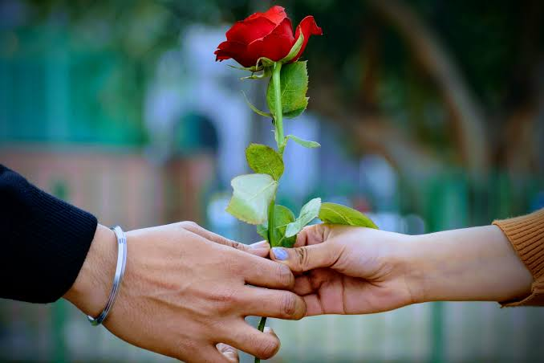

എനിക്ക് ഒരു കാര്യം പറയാൻ ഉണ്ട്. നീ ഇത് full വായിക്കണം please. എന്നെ കാണാൻ വലിയ look ഒന്നും ഇല്ല പക്ഷേ. ഞാൻ ലൈഫിൽ ആദ്യമായിട്ട ഈ ഒരു രീതിയിൽ.എനിക്ക് നിന്നെ ഭയങ്കര ഇഷ്ടമാണ്.I Know നമ്മൾ സംസാരിക്കാൻ തുടങ്ങിയിട്ട് കുറച്ചേ ആയുള്ളൂ but എന്തോ നിന്നോട് ഒരു അടുപ്പം തോന്നി ബാക്കി ആരോടും ഇല്ലാത്തത്. ഞാൻ ബാക്കി ഉള്ളവരെ പോലെ justMusic()) friends പിന്നെ lover അങ്ങനെ അല്ല Life time partner ആയിട്ട് നിന്നെ വേണം.എനിക്ക് നിന്നെ എത്ര ഇഷ്ടം ആണ് ചോദിച്ച എനിക്ക് അറിയില്ല but എന്നെക്കാളും എനിക്ക് നിന്നെ ഇഷ്ടം ആണ്.I Love U . എനിക്ക് ഒരു ഉറപ്പ് കൂടെ തരാൻ പറ്റും നിന്നെ ഞാൻ പൊന്ന് പോലെ നോക്കും പിന്നെ നിന്നെ ഞാൻ ഒരിക്കലും വിഷമിപ്പിക്കില്ല പിന്നെ നിനക്ക് എന്നോട് ഉള്ള Trust അത് ഞാൻ ഒരിക്കലും കളയില്ല സത്യം and എന്നും എപ്പോഴും നിനക്ക് ഒരു നല്ല listener ആയി ഞാൻ ഉണ്ടാക്കും.ഞാൻ പറയുന്നത് ഒക്കെ നിനക്ക് ചെലപ്പോ Cringe ആയിട്ട് ഒക്കെ തോന്നാം but എൻ്റെ ഇഷ്ടം എനിക്ക് ഇങ്ങനെ പറയാൻ അറിയൂ sorry. Vaaranam Aayiram മൂവിയിലെ സൂര്യനെ പോലെ "നീ അവളോ അഴക്" എന്ന് പറയാൻ എനിക്ക് അറിയില്ല എനിക്ക് അറിയുന്നത് മിഥുനം മൂവിയിലെ ശ്രീനിവാസനെ ആണ് " സൂര്യനോട് ചോദിച്ചിട്ട് അല്ല താമര വിടരുന്നത്, ഏകലവ്യൻ ദ്രോണാചാര്യർക്ക് ഗുരുസ്ഥാനം കല്പിച്ചത് അങ്ങേരോട് ചോദിച്ചിട്ട് അല്ല"നീ വിചാരിക്കും ഞാൻ ചുമ്മാ ബാക്കി ബോയ്സ്നെ പോലെ ചുമ്മാ പറഞ്ഞതാ എന്ന് പക്ഷേ സത്യം ആയിട്ടും എനിക്ക് നിന്നെ ഭയങ്കര ഇഷ്ട എന്നെക്കാളും. എന്തോ നിന്നോട് chat ഒക്കെ ചെയ്യുന്ന സമയത്ത് I Feel Something special എനിക്ക് അത് എങ്ങനെ പറയണം എന്ന് ആയില്ല. നീ തിരിച്ചും ഇഷ്ടം ആണ് എന്ന് തിരിച്ച് പറയും എന്ന് വിശ്വസിക്കുന്നു I don't force you because ഇഷ്ടം അങ്ങനെ കിട്ടുന്ന ഒന്ന് അല്ലല്ലോ. ഇത് സ്നേഹം ആണ് ഒരാൾക്ക് ഒരാളോട് തോന്നുന്ന ആത്മമായ വികാരം, അത് ഇല്ലാതെ മനുഷ്യൻ ഇല്ല അമ്മക്ക് അച്ഛനോട് എന്ന പോലെ പൂവിന് പൂമ്പാറ്റയോട് എന്ന പോലെ ഒരു എഴുത്തുകാരന് അയാളുടെ പേനയോട് എന്ന പോലെ എനിക്ക് നിന്നോട്.നീ yes പറഞ്ഞ ഞാൻ ഒരിക്കലും മറക്കാത്ത ഒരു ദിവസം ആയി അത് മാറും otherwise Just an ordinary day like other days. നീ പെട്ടെന്ന് ഒന്നും പറയണ്ട നന്നായി ഒന്ന് ആലോചിച്ച് നാളെ ഇഷ്ടം ആണേൽ just എനിക്ക് ഒരു Red heart മാത്രം message ആയിട്ട് ഇട്ട മതി . I know നിനക്ക് നിൻ്റെ അമ്മയെ proud ആക്കണം അമ്മ പറയുന്ന വ്യക്തിയെ കെട്ടണം okay.ഞാൻ വരും നിൻ്റെ അമ്മനോട് നിന്നെ കെട്ടിച്ച് തരുവോ എന്ന് ചോദിക്കാൻ നല്ല ഒരു ജോലി ഒക്കെ ആയിട്ട്.നേരിട്ട് ഇത്രയും പറയാൻ പറ്റുവോ എന്ന് എനിക്ക് അറിയില്ല.നീ നിൻ്റെ old relationship പറഞ്ഞ സമയത്ത് അവനോട് call സംസാരിക്കുമോ കരഞ്ഞു എന്ന് പറഞ്ഞ സമയത്ത് ഞാൻ എന്തിനാണ് കരഞ്ഞത് എന്നും എനിക്ക് അറിയില്ല.ഇപ്പോ ഇഷ്ടം അല്ലേലും. എന്നെ ഇങ്ങോട്ട് സ്നേഹിക്കണം എന്ന് ഞാൻ നിർബന്ധം പറയില്ല പക്ഷേ എനിക്ക് നിന്നെ സ്നേഹിക്കല്ലോ Block ഒന്നും ചെയ്യല്ലേ അത് ആയിരിക്കും എനിക്ക് എറ്റവും കൂടുതൽ വിഷമം ഉണ്ടാക്കുവാ normal പോലെ message അയച്ച മതി. എനിക്ക് അറിയുന്ന മലയാളത്തിൽ ഞാൻ ടൈപ്പ് ചെയ്തു spelling mistake ഓക്കെ ക്ഷമിക്കണം
എന്ന് സ്വന്തം Devanand ❤️
